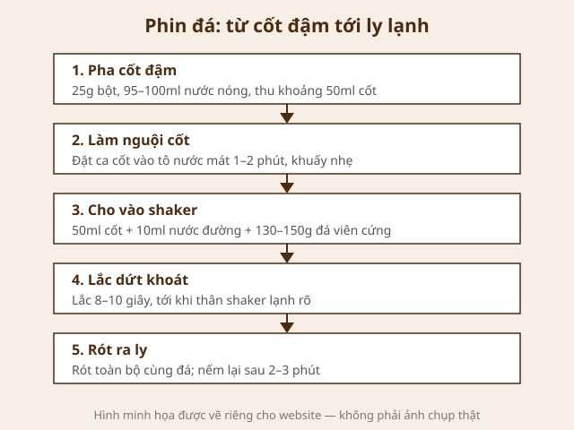

Cà phê phin đá: pha đậm để không nhạt khi gặp đá
Tác giả: Ruler
Buổi sáng pha phin đá ở nhà, nhiều người gặp cùng một cảnh: ngụm đầu tiên đậm đà, thơm rõ, nhưng càng uống càng nhạt, tới đáy ly chỉ còn nước đường loãng. Vấn đề không nằm ở hạt hay ở phin, mà ở chỗ đá tan ra thành nước trong suốt thời gian bạn uống. Một ly đá ngon phải tính trước phần nước đó: pha cốt đậm hơn ly nóng, hạ nhiệt cốt trước khi gặp đá, và dùng đá tan chậm. Làm đúng ba việc này, ly đá giữ được vị từ ngụm đầu tới ngụm cuối.
Năm con số của một ly
Nếu chỉ nhớ một bảng duy nhất trong bài này, hãy nhớ bảng dưới đây. Đây là điểm bắt đầu cho một ly đen đá, theo hai hướng dẫn của Lyon Coffee và MTV. Từ điểm bắt đầu này, bạn chỉnh theo hạt và khẩu vị của mình ở các lần pha sau.
| Thành phần | Lượng cho một ly |
|---|---|
| Bột cà phê xay pha phin | 25g |
| Nước nóng để ủ và pha cốt | 95–100ml |
| Cốt đậm thu được | Khoảng 50ml |
| Nước đường 1:1 (nếu uống ngọt) | 10ml |
| Đá viên cứng | 130–150g |
Nước đường 1:1 nghĩa là đường và nước bằng nhau theo khối lượng. Pha bằng cách cân đường và nước ngang nhau — ví dụ 100g đường với 100g nước — khuấy cho tan rồi để nguội hẳn mới dùng. Với 10ml nước đường, ly có vị ngọt nhẹ nhàng; muốn ngọt hơn hay nhạt hơn thì chỉnh ở lần pha sau. Thời gian lắc là 8–10 giây, và nên uống thử lại khi đá đã tan được vài phút.
Chọn hạt theo cách bạn uống
Ly đá ngon bắt đầu từ hạt, nhưng "hạt ngon" ở đây không có một đáp án chung. Cách chọn nhanh nhất là bắt đầu từ cách bạn uống:
Uống đen, không đường, thích vị mạnh: bắt đầu với Robusta. Hạt này có caffeine cao hơn Arabica, vị đậm và thiên về đắng, cho cảm giác mạnh khi pha phin, và cũng là dòng quen thuộc ở các quán bình dân. Nhưng đậm không có nghĩa là gắt: hạt tốt, rang đúng và bảo quản kín vẫn cho vị đậm, hậu vị rõ mà không khét.
Thích thơm hơn, muốn ly có thêm hương: pha trộn Robusta với một phần Arabica. MTV gợi ý tỉ lệ 70% Robusta và 30% Arabica làm điểm khởi đầu để thử: Robusta giữ thân vị và độ đậm, Arabica thêm những nốt hương khác, có khi hơi chua thanh, có khi thoảng mùi trái cây, tùy loại hạt.
Người mới chưa biết gu của mình: Lyon Coffee gợi ý bắt đầu bằng blend Robusta–Arabica rang vừa hoặc đậm vừa, giữ nguyên công thức 25g cà phê, 50ml cốt và 10ml nước đường trong vài lần đầu. Khi công thức đã cố định, đổi hạt mới mới thấy rõ hạt nào hợp mình, vì lúc đó mọi thứ khác đã giống nhau.
Mức rang quyết định phần lớn cảm giác khi uống lạnh. Rang vừa giữ hương nhiều hơn, vị sạch, ít khói. Rang đậm vừa thì mạnh hơn, hợp gu cacao và đắng rõ. Còn hạt rang cháy quá đà thì màu cốt sẫm thật, nhưng hương bị bóp hẹp, mùi khói và vị đắng khô càng lộ khi uống lạnh. Vì vậy đừng chọn hạt rang cháy chỉ vì muốn cốt đen hơn: màu sẫm không đi kèm vị ngon. Trước khi pha, ngửi bột khô: nếu đã nghe mùi khói hoặc cháy mạnh, đổi cách rót cũng chỉ vớt vát được một phần rất nhỏ.
Một lưu ý khi mua hạt: đừng đánh giá hạt bằng màu bột. Bột sẫm màu chưa chắc đã ngon, cũng chưa chắc đã nhiều caffeine. Rang quá tay thì hạt ám mùi khói và vị cháy, át hết những gì vốn có của hạt. Nếu thường xuyên pha đen đá, thử vài mức rang khác nhau sẽ nhanh hơn là nghe theo bất cứ lời khuyên chung nào.
Pha cốt đậm: hai cách ủ, chọn một
Cốt cho ly đá lấy ít hơn ly nóng: với 25g bột và khoảng 95–100ml nước nóng, bạn chỉ thu khoảng 50ml cốt đậm đầu tiên. MTV dùng khoảng 90–100ml nước cho cùng 25g bột, gần như trùng với khoảng của Lyon Coffee, nên bạn có thể bắt đầu với 95ml nước rồi chỉnh theo loại bột và khẩu vị. Nước chảy cuối phin loãng hơn nhiều; lấy thêm chỉ làm cốt nhạt đi, nên dừng ở 50ml cốt đậm là vừa.
Nước pha để 90–95 độ C là vừa; với hạt rang vừa hoặc đậm vừa thì lấy khoảng 92–95 độ C theo gợi ý của Lyon Coffee. Nước sôi già gặp bột rang đậm, chiết lâu thì ly dễ đắng gắt; nước nguội quá thì cà phê chiết không đủ, nhạt và thiếu cân bằng.
Xay ở mức vừa tới vừa mịn, thô hơn bột espresso. Bột phải đều cỡ, tránh lẫn hạt to với bột mịn đọng dưới đáy. Nhìn tốc độ nhỏ giọt để đoán độ xay: nhỏ giọt ào ào ngay sau khi rót nước chính thì bột đang quá thô; phin đứng nước nhiều phút thì bột quá mịn hoặc nắp gài bị ép chặt quá.
Trước khi rót nước chính, bột cần được ủ cho nở đều. Có hai cách ủ, bạn chọn một:
Ủ một lần, đơn giản (theo MTV): rót 20–25ml nước nóng cho ướt mặt bột, để yên 30–45 giây rồi rót nốt phần nước còn lại. Bột mới rang còn nhiều khí, ủ trước giúp khí thoát ra và nước thấm đều hơn.
Ủ hai lớp (theo Lyon Coffee): đổ chừng 10ml nước nóng vào nắp phin rồi đặt thân phin lên, chờ 20–30 giây để lớp bột dưới đáy ngấm nước và nở ra trước; rồi chuyển phin lên ca đựng cốt, rót từ từ 10ml nước nóng vòng quanh mặt bột, đậy nắp lại và chờ chừng một phút. Cách này tốn thêm một thao tác nhưng bột nở đều hơn, hợp khi bạn muốn kiểm soát kỹ từng mẻ.
Đừng chờ phin chảy hết mới nhấc ra. Dòng chảy cuối đã nhạt hẳn, lấy thêm chỉ làm cốt nhạt đi — chừng 50ml cốt đậm là dừng được, dù bột trong phin còn ẩm. Nhịp chảy cũng không cần canh từng giây: mỗi phin, mỗi loại hạt, mỗi độ xay chảy một nhịp khác nhau, cứ để nó chảy tự nhiên. Cách châm: sau khi ủ, cho thêm 75–80ml nước nóng, rót từ từ và đưa tay đi vòng cho nước phủ đều mặt bột, rồi đậy nắp lại chờ cốt chảy xuống.
Phần pha cốt dùng lại cách pha phin nhỏ trong Pha cà phê phin: tỉ lệ 25g – 80ml và cách chỉnh cho đúng gu của bạn, chỉ khác ở lượng nước: tráng phin, cho 25g cà phê vào phin rồi đặt nắp gài lên, không ép mạnh.
Làm nguội trước, đá cho sau
Đây là bước nhiều người bỏ qua nhất, mà lại là bước quyết định ly đá có nhạt ngay từ đầu hay không. Cốt vừa nhỏ giọt xong còn rất nóng — dội thẳng lên đá là cách nhanh nhất làm ly mất vị, vì đá tan nhiều trong vài giây đầu tiên, trước khi bạn kịp uống ngụm nào.
Cách đơn giản nhất: đặt ca cốt vào tô nước mát, khuấy nhẹ chừng 1–2 phút; sờ thấy ca đã nguội bớt rõ thì đem lắc hoặc rót lên đá. Để cốt nghỉ vài phút cũng được, nhưng để nguội hẳn thì hương bay mất nhiều.
MTV nhắc cùng nguyên tắc theo cách khác: đừng dội cà phê nóng lên một nhúm đá rồi để mặc đá tan hết. Chuẩn bị sẵn ly đá rồi rót cốt vào, khuấy nhẹ tay cho nguội đều. Cốt đã đậm thì đá vừa đủ sẽ làm ly dễ uống, hương vẫn còn.
Một cách khác nữa là pha cà phê trực tiếp lên đá. Rót cốt nóng thẳng lên đá thì ly lạnh rất nhanh, đổi lại là đá tan ra nhiều hơn. Ai pha thẳng lên đá thì phải cộng phần nước đá tan vào lượng nước của công thức. Mới tập thì nên làm nguội cốt trước rồi mới lắc: cách này ít biến số hơn, dễ đoán kết quả hơn.

Hình minh họa được vẽ riêng cho website — không phải ảnh chụp thật.
Đá viên cũng là một nguyên liệu, không chỉ là thứ làm lạnh. Bạn nên dùng đá sạch, không mùi lạ, kích thước tương đối lớn: đá nhỏ tan nhanh hơn và làm ly loãng trước khi uống hết, trong khi đá viên đặc, kích thước vừa tan chậm và dễ kiểm soát độ loãng hơn. Lyon Coffee dùng khoảng 130–150g đá viên cứng cho một ly, tính cả phần đá cho vào shaker và phần đá trong ly phục vụ. Đá đã mềm hoặc vụn nhỏ thì tránh dùng: nước từ loại đá này tăng lên rất nhanh, ly loãng ngay sau khi lắc. Với quán, nên cân đá khi xây công thức, rồi dùng một ca xúc cố định thay vì ước lượng mỗi lần.
Một mẹo nhỏ khi mua đá: chọn đá viên đặc, trong, không rỗng ruột. Đá rỗng ruột hoặc đá nhỏ tan nhanh hơn đá viên đặc. Hai loại đá khác nhau có thể cho hai ly khác nhau dù công thức giống hệt — khác nhau ở tốc độ tan.
Đường và sữa: khuấy lúc còn nóng, đá cho sau cùng
Nếu uống cà phê đen đá không đường, bạn bỏ hẳn phần nước đường, giữ nguyên 50ml cốt rồi chuyển sang bước lắc hoặc rót lên đá. Cốt mạnh quá thì ghi lại để chỉnh ở mẻ sau; đừng chữa cháy bằng cách đổ thêm nước vào ly đang uống. Ai chưa uống được đen nguyên chất thì bắt đầu từ 5ml nước đường, rồi bớt dần mỗi lần pha.
Nếu uống có đường, cho 10ml nước đường vào 50ml cốt thành hỗn hợp 60ml, khuấy ngay khi cốt còn nóng để độ ngọt phân bố đều. Sữa đặc cũng vậy: chỉ tan hết khi cà phê còn nóng, vì vậy khuấy sữa trước, đá cho sau.
Với cà phê sữa đá, Đặc Sản 4 Phương ghi tỉ lệ sữa đặc theo khẩu vị, tính cho một phin 25g bột:
| Uống thế nào | Bột cà phê | Sữa đặc |
|---|---|---|
| Đậm, ít ngọt | 25g | 1 thìa canh |
| Cân bằng | 25g | 1,5 thìa canh |
| Ngọt, béo | 20–25g | 2 thìa canh |
Một phin 25g bột cho chừng 40–60ml cốt đặc, đủ để pha với sữa đặc và đá mà vị vẫn rõ. Muốn sữa đặc hòa đều thì phải cho vào lúc cà phê còn nóng — bỏ đá trước, sữa gặp lạnh sẽ quánh lại và đọng dưới đáy ly, khuấy mấy cũng khó tan. Một mẹo khác: đổ cà phê qua lại hai ly cho lên bọt và nguội đều, rồi mới cho đá vào — bạn có thể thử ở nhà nếu thích.
Thời gian nhỏ giọt lý tưởng cho phin sữa đá là khoảng 4–6 phút, theo Đặc Sản 4 Phương. Cốt pha sẵn cất ngăn mát vẫn dùng được trong ngày, nhưng mùi thơm nhạt dần theo giờ — pha mới mỗi sáng vẫn hơn. Khi uống mới thêm sữa và đá.
Lắc tạo bọt và nếm thử
Cho cốt đã nguội bớt (50ml) cùng nước đường (10ml) vào shaker, rồi thêm đá viên cứng khoảng 130–150g. Đậy nắp kín, giữ shaker bằng cả hai tay, lắc mạnh 8–10 giây rồi dừng. Lắc lâu hơn chỉ để có nhiều bọt sẽ làm đá tan thêm và ly nhạt đi. Khi thấy vỏ ngoài đã lạnh buốt tay và bên trong có bọt mỏng là được.
Đổ hết cả cà phê lẫn đá trong shaker ra ly. Ly đạt có lớp bọt mỏng phủ trên mặt, bọt li ti và đứng được một lúc. Nếm ngụm đầu ngay sau khi rót, rồi nếm lại sau 2–3 phút: lúc đó đá đã tan ra một phần, ly còn giữ được mùi và hậu vị hay không sẽ lộ rõ.
Không có shaker thì làm nguội cốt trước, hòa đường vào rồi rót lên đá — vị vẫn vậy, chỉ thiếu lớp bọt. Bình thủy tinh mỏng không chịu được va đập với đá khi lắc mạnh — dùng shaker nhựa hoặc inox thì an toàn hơn.
Ly chưa ngon: xem lại ở đâu
Bảng dưới đây xếp các sự cố theo lúc chúng xuất hiện: lúc pha, lúc lắc, lúc uống. Mỗi dòng chỉ đổi một thứ ở mẻ sau, để lần sau bạn biết chính xác thứ nào đã giúp ly ngon hơn.
| Ly của bạn | Xem lại trước | Lần sau đổi gì |
|---|---|---|
| Phin chảy quá nhanh, cốt sẫm nhưng hương mỏng | Bột có thể quá thô | Xay nhỏ hơn một nấc; các thứ khác giữ nguyên |
| Phin gần như đứng nước, cốt đắng khô | Bột có thể quá mịn hoặc nắp gài ép quá chặt | Xay thô hơn một nấc; đặt nắp gài nhẹ tay hơn, không chọc muỗng vào lớp bột |
| Vừa rót còn đậm nhưng nhanh chóng loãng | Đá mềm, lắc quá lâu, hoặc cốt đã nhạt từ trước | Dùng đá viên cứng; lắc đúng 8–10 giây; xem lại cốt đã đủ đậm chưa |
| Bọt nhanh xẹp | Cốt còn quá nóng khi lắc, hoặc lực lắc chưa đủ dứt khoát | Làm nguội cốt 1–2 phút trước khi lắc; lắc dứt khoát khoảng 8–10 giây |
| Ly quá ngọt | Cho quá nhiều nước đường | Lần sau cho 5ml nước đường thay vì 10ml; cốt và đá giữ nguyên |
| Ly quá đắng, có mùi khét | Hạt rang quá đậm, nước quá nóng, hoặc phin chảy quá lâu | Đổi sang hạt rang vừa hơn; hạ nhiệt độ nước về khoảng 90–92 độ C |
| Ly nhạt ngay từ ngụm đầu | Ít bột, bột xay thô, hoặc lấy quá nhiều cốt loãng cuối phin | Tăng bột từ 25g lên 27g, giữ nguyên lượng nước; chỉ lấy 50ml cốt đậm đầu |
Hai thói quen dễ làm hỏng ly đá mà người mới hay mắc: thứ nhất, người mới hay nén mạnh khi thấy phin chảy nhanh, và chờ cho hết từng giọt cuối khi thấy phin chảy chậm. Ép cho từng giọt cuối cùng rơi xuống không làm ly đậm hơn, mà thường làm vị lệch đi, vì phần chảy cuối nhẹ và dễ làm cốt mất độ tập trung. Thứ hai, cố kéo dài thời gian nhỏ giọt vì nghĩ càng nhỏ giọt lâu thì cà phê càng đậm. Một mẻ pha phin thường cần vài phút, nhưng phần chảy cuối thường nhẹ hơn, nên kéo dài chỉ thêm nước nhạt vào cốt.
Nếm cốt trước khi cho đá: nếu cốt đã gắt ở nhiệt độ thường thì đá cũng không cứu được — đá chỉ làm lạnh và loãng thêm, không sửa được một mẻ pha lệch.
Kết luận
Pha phin đá ngon là bài toán cân bằng ở ba chỗ: cốt đủ đậm để chịu được nước đá tan ra, cốt được làm nguội trước khi gặp đá, và đá đủ cứng để tan chậm. Hãy bắt đầu với 25g bột, khoảng 95ml nước ở 90–95 độ C, thu khoảng 50ml cốt đậm. Làm nguội cốt 1–2 phút trong tô nước mát, thêm 10ml nước đường nếu uống ngọt, rồi lắc với khoảng 130–150g đá viên cứng trong 8–10 giây. Nếm lại sau 2–3 phút, khi đá đã bắt đầu tan, và chỉ đổi một thứ ở lần pha sau. Sau vài lần thử, bạn sẽ có công thức đá của riêng mình.
Nguồn tham khảo
- Lyon Coffee, "Cách pha cà phê đen đá bằng phin đậm thơm" — 25g cà phê, khoảng 95–100ml nước nóng, thu khoảng 50ml cốt đậm, 10ml nước đường tỉ lệ 1:1, khoảng 130–150g đá viên cứng, lắc trong 8–10 giây; nhiệt độ nước khoảng 92–95 độ C; ủ đáy 10ml trong 20–30 giây rồi ủ mặt 10ml trong khoảng 60 giây; làm nguội cốt trong tô nước mát khoảng 1–2 phút trước khi lắc; nếm lại sau 2–3 phút (truy cập 23/11/2026): https://lyoncoffee.com.vn/cach-pha-ca-phe-den-da-ngon/
- MTV, "Cách pha cà phê đen đá đậm vị nhưng không quá đắng" — bắt đầu với 25g cà phê xay và khoảng 90–100ml nước nóng; ủ khoảng 20–25ml nước nóng trong 30–45 giây; nhiệt độ nước khoảng 90–95 độ C; phối trộn Robusta với Arabica theo tỉ lệ 70% và 30% làm điểm khởi đầu; dùng đá viên to, làm lạnh cà phê trước khi thêm đá; đừng rót cà phê nóng lên một lượng đá quá ít (truy cập 23/11/2026): https://mtv.vn/cach-pha-ca-phe-den-da/
- Đặc Sản 4 Phương, "Cà phê sữa đá pha phin: tỷ lệ cà phê, sữa đặc và mẹo không nhạt" — một phin chuẩn cho ra khoảng 40–60ml cà phê đặc; thời gian nhỏ giọt lý tưởng khoảng 4 đến 6 phút; tỉ lệ sữa đặc: đậm ít ngọt 25g cà phê với 1 thìa canh, cân bằng 25g với 1,5 thìa canh, ngọt béo 20–25g với 2 thìa canh; khuấy cà phê với sữa thật đều khi còn nóng rồi mới cho đá; dùng đá viên to để tan chậm; cốt pha sẵn để ngăn mát dùng trong ngày (truy cập 23/11/2026): https://dacsan4phuong.vn/ca-phe-sua-da-cach-pha-phin-dam-vi-viet-nam.htm